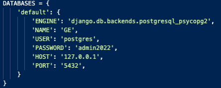
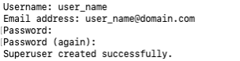
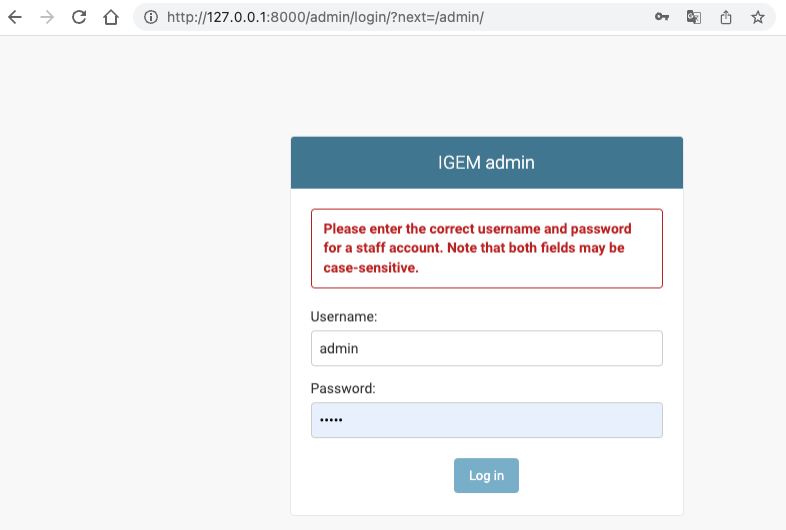
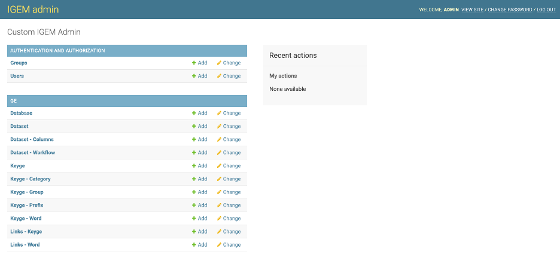

Install¶
The IGEM will consist of files with processes and interfaces and a relational database.
Files with IGEM are available on the GitHub REPO. To make a copy on the server designated for installation, run via the command line:
$ git clone git@github.com:HallLab/IGEM.git
The following dependencies were performed in Python 3.10. It may be advisable to run IGEM in a virtual environment:
$ pip install -r requirement.txt
Database customization to host IGEM
IGEM accepts several types of software to manage the database, including MS SQL, MySQL, Postgres, and others. By default, the system is already configured with SQLite. To change the database manager, open the /src/settings.py file and change the DATABASES parameters. The example below demonstrates a configuration using a Postgres database:
- To start the database, type::
$ python manage.py makemigrations
- Start creating the structure in the designated database::
$ python manage.py migrate
At this point, we already have IGEM installed and the database created with the IGEM structure. To check if the system is working correctly, type:
$ Python manage.py check
- The IGEM system has a layer of security per user and functions. To create the first user, run::
$ python manage.py createsuperuser
Enter your username, email, and security password.
The system will be ready to parameterize the master data, perform external data load and generate reports.
WEB interface The IGEM system has a web interface for performing activities such as master data registration and simple queries in the database.
- To start the WEB service, type::
$ python manage.py runserver
In a browser, go to http://127.0.0.1:8000/admin.
The IGEM system will show the authentication page.
Enter the username and password created in the previous steps. The administration page will be loaded after authentication.
The features of this interface will be explored in detail in Master Data and Access and Permissions.
File structure:
- Inside the src directory, we will have:
/ge/: all source codes and interfaces for the functioning of APP GE.
/loader/: all input files for loading master data and output directory of the FILTER process.
/psa/: Persist Store Area to store the database files downloaded and processed by the ETL process. Each DATASET will have its subfolder within the PSA.
/src/: hosts the source code of IGEM components, configurations and parameterizations.
/templates/: hosts the standard web interfaces in IGEM.
PSA - Store Area Persists
The PSA is a folder that stores the Dataset files loaded in their original format and transformed during the ETL process. Each Database will be a subfolder, and each Dataset a subfolder concerning the Database. These structures will be created automatically, and if deleted, they will be created again on the following workflow run for the corresponding dataset. Each external Dataset source will be a design solution for the original uploaded file. If you want to keep this file for queries and analyses, configure it in the Dataset register to keep the original file. Important that this file will be kept unzipped. To reduce the amount of system space, it is not recommended to keep these files. The subfolder will also have a transformed version normalized by the rules of the applied dataset.